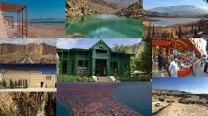

Go Back To Home
Balochistan,Pakistan

Balochistan, Pakistan is the largest province in Pakistan by land area, encompassing a vast and diverse landscape of mountains, deserts, and coastline. It is home to the Baloch people, an ethnically distinct group with a rich cultural heritage.
-
Vast Territory:
Balochistan covers nearly half of Pakistan's total land area, making it the largest province.
Rugged Terrain:
The province is characterized by its rugged terrain, including the Sulaiman Range and the Kirthar Range, as well as the vast expanse of the Cholistan Desert.
Coastal Beauty:
Balochistan boasts a long coastline along the Arabian Sea, offering stunning beaches and coastal towns.
Rich Cultural Heritage:
The Baloch people have a unique culture, with their own language, traditions, and music.
Balochistan, Pakistan culture.
Natural Resources:
Balochistan is rich in natural resources, including natural gas, copper, and other minerals.
Challenges and Opportunities
Balochistan faces several challenges, including underdevelopment, poverty, and security issues. However, the province also presents significant opportunities, particularly in the areas of resource development, tourism, and infrastructure development.